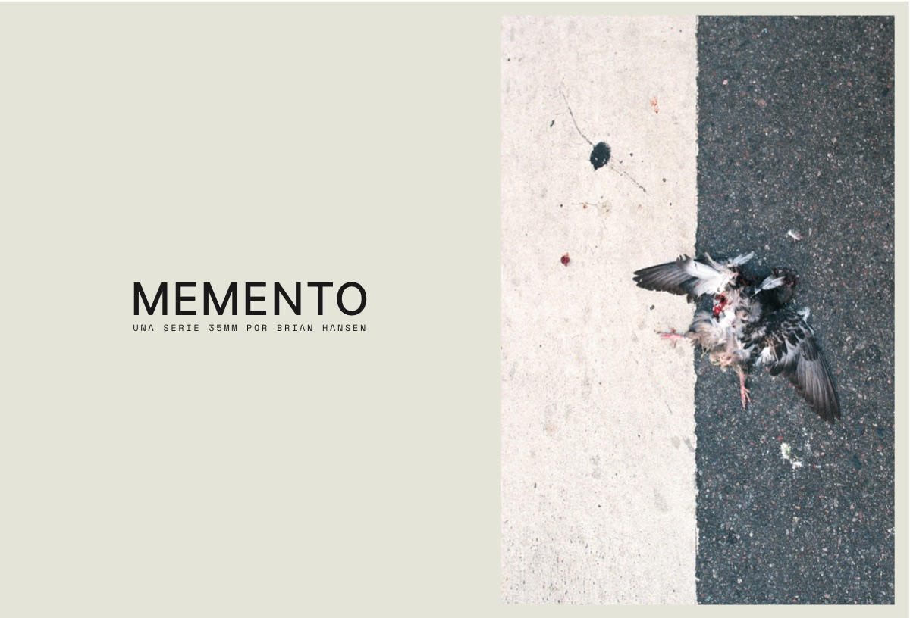

FILM


PHOTOGRAPHY
MEMENTO

Una selección en papel del universo visual de MEMENTO, disponible para compra en Amazon.
TALLER DE CINE DOCUMENTAL
---TALLER DE CINE DOCUMENTAL


SELECTED ACTING WORK
Bookings and reels